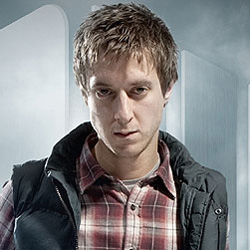

|
Rory WilliamsRory Williams is a fictional character portrayed by Arthur Darvill in the long-running British science fiction television series Doctor Who.[1]Having been introduced at the start of the 5th series, Rory joins the Eleventh Doctor (Matt Smith) as a companion in the middle of Series 5.[2][3][4] As Amy Pond's fiancé, Rory is initially insecure because he believes Amy secretly loves the Doctor more. Later, however, he proves to be a hero in his own right and he and Amy marry. The couple conceive a daughter aboard the Doctor's time machine, theTARDIS, while in the time vortex, but their baby is kidnapped at birth. In "A Good Man Goes to War", Rory and Amy discover their time-traveler friend River Song is actually their daughter Melody Pond. The Doctor and River marry in "The Wedding of River Song", and Rory becomes the Doctor's father-in-law. In "The Angels Take Manhattan", the fifth episode of the seventh series, he and Amy are transported back in time by a Weeping Angel, leading to the couple's departure from the series.
|
|
Julia Schwartz Ann Marie Skjold |
Content derived from the Doctor Who Wikipedia |